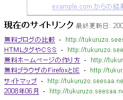

サイトリンク出現の確認方法あれこれ
今日、グーグルのウェブマスターツールをのぞいてみると、サイトリンクなるものが発生しているらしいドラマ系のブログがひとつあったのですが、これはどうやって確認すればいいんでしょうか。いまいちよくわかりません。
発生しているサイトリンクはすべてカテゴリーページで、検索順位で１位をとっているキーワードで検索してみても出現しないんです。もっとマニアックな検索キーワードなのでしょうか、何というキーワードで出現するのかいろいろと検索してもみつからないです。
ひょっとしたら、出現したあとに消失？しちゃったんでしょうか、いまいちサイトリンク確認方法は難しいよなって思います。ウェブマスターツールではまだ消えていないんでまたちょくちょくと確かめてみようと思います。
ウェブマスターツールでのサイトリンク出現
ちなみにこのブログでもSearch Console（※旧ウェブマスターツール）で見る分にはどうやら出現する？っぽいんです。トラフィックはその気になっているブログと比べると１０分の１以下なんですが、たぶん、超マニアックなので検索すると出現するっぽい気がします。でもわかんないんです、そのキーワードの確認方法が。

それと今日でしょうか、なんだかグーグルツールバーのページランクが上がっているブログがちょくちょくと見つかったんですが、ページランクの更新があったんでしょうか、この前更新されたばかりと思っていましたが、グーグルの１０周年記念イベントなんでしょうか、更新されているみたいなんで確認しようって思います。
関連記事
- ＳＥＯ的に重要な内部リンクの場所
最近は無料ブログのＳＥＯ対策というテーマでブログを更新しています。たぶん、きっと毎日更新しちゃいけないとは思うんですが、今日もＳＥＯ的なお題で記事を投稿してみようって思います。 無料ブログにＳＥＯは... - 内部リンクの増加方法？
内部リンクの増加方法？ですが、どうなんでしょうか。無料ブログは内部リンクが増えやすいとよく言われています。 この理由はおそらく、無料ブログは１記事作成して投稿すると自動的にカテゴリページも過去ログペ... - サイトマップの作り方（ウェブマスターツール）
グーグル用のサイトマップを作成したら、グーグルのウェブマスターツールをつかってグーグルに送信します。そうするとグーグルの検索ロボットが自分のブログの構造を認識しやすくなり、自分のページが登録されやすく...